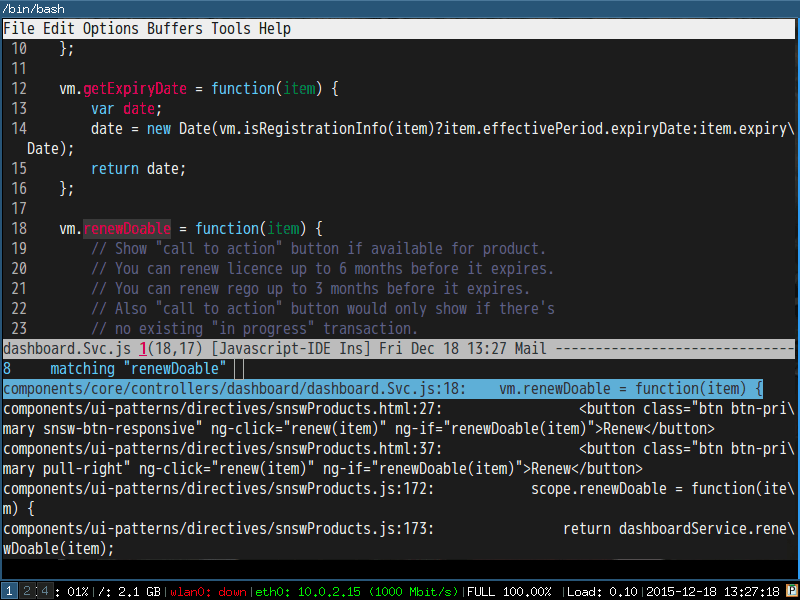
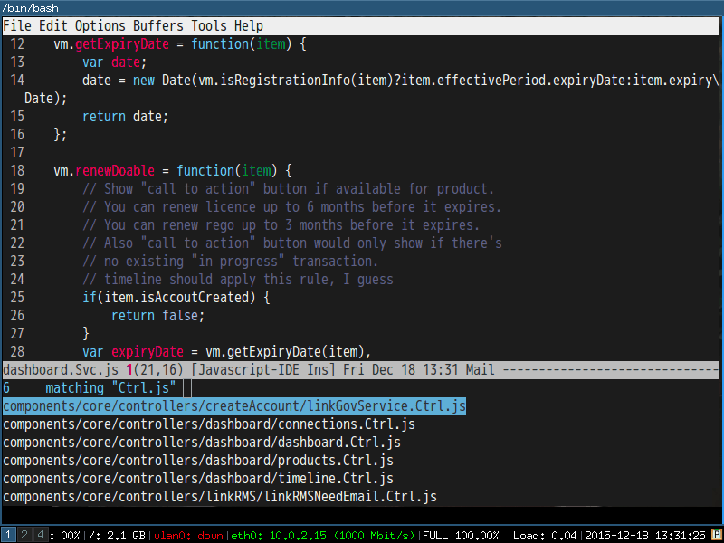
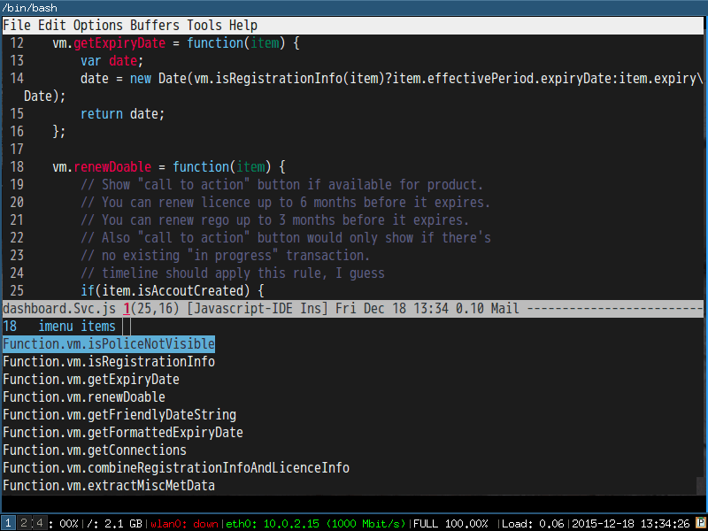
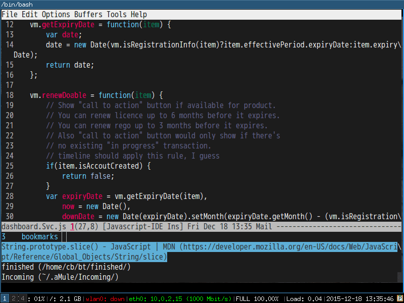
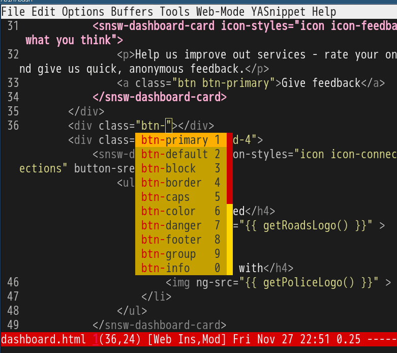

How to use Gnus Group Topics efficiently
to use Gnus Group Topics efficiently :en:emacs:gmail:email:gnus:
Group Topics is used to manage Gnus groups.
For example, you can,
- Place groups (mail folders) from Gmail into "gmail" topic
- Place groups (mails folders) from Outlook.com into "hotmail" topic
- Make "gmail" and "hotmail" belong to the root topic "Gnus"
Enable it is just one line,
(add-hook 'gnus-group-mode-hook 'gnus-topic-mode)
Now comes the question how to delete/add/move the topics?
The official answer is to read its manual.
But there is a simpler solution. All you need to do is insert below code into ~/.emacs or ~/.gnus.el,
(eval-after-load 'gnus-topic
'(progn
(setq gnus-topic-topology '(("Gnus" visible)
(("hotmail" visible nil nil))
(("gmail" visible nil nil))))
(setq gnus-topic-alist '(("hotmail" ; the key of topic
"nnimap+hotmail:Inbox"
"nnimap+hotmail:Drafts"
"nnimap+hotmail:Sent"
"nnimap+hotmail:Junk"
"nnimap+hotmail:Deleted")
("gmail" ; the key of topic
"INBOX"
"[Gmail]/Sent Mail"
"[Gmail]/Trash"
"Drafts")
("Gnus")))))
The management of topics is as easy as editing above code.
My setup always works no matter ~/.newsrc.eld is loaded or not.
BTW, "hotmail" and "gmail" are the keys you used when configuring IMAP accounts,
(setq gnus-select-method
'(nnimap "gmail" ; key
(nnimap-address "imap.gmail.com")
(nnimap-server-port 993)
(nnimap-stream ssl)))
(add-to-list 'gnus-secondary-select-methods
'(nnimap "hotmail" ; key
(nnimap-address "imap-mail.outlook.com")
(nnimap-server-port 993)
(nnimap-stream ssl)))
Git gutter tip
gutter tip :en:emacs:git:git:gutter:
I use git-gutter.el everyday. It indicats "whether a line has been inserted, modified or deleted". You can jump to the inser/modified/deleted line easily.
But I usually need to know what line changed in latest commit.
So I designed `M-x git-gutter-reset-to-head-parent`,
(defun git-gutter-reset-to-head-parent()
(interactive)
(let (parent (filename (buffer-file-name)))
(if (eq git-gutter:vcs-type 'svn)
(setq parent "PREV")
(setq parent (if filename (concat (shell-command-to-string (concat "git --no-pager log --oneline -n1 --pretty='format:%H' " filename)) "^") "HEAD^")))
(git-gutter:set-start-revision parent)
(message "git-gutter:set-start-revision HEAD^")))
(defun git-gutter-reset-to-default ()
(interactive)
(git-gutter:set-start-revision nil)
(message "git-gutter reset"))
`M-x git-gutter-reset-to-default` compare you file under working directory with the latet version under VCS.
`M-x git-gutter:next-hunk` and `M-x git-gutter:previous-hunk` will jump to the deleted/modified/added line.
Use gcalcli for google calendar
gcalcli for google calendar :en:google:calendar:
I use cli `pip install –user gcalcli parsedatetime` to install gcalcli into HOME folder.
Usage is simple. `gcalcli calw` is enough.
For multiple accounts, `mkdir -p ~/.config/gcacli-work; gcalcli –configFolder ~/.config/gcacli-work calw`.
Use paste (Unix) to join two calendars in bash,
paste <(gcalcli --configFolder ~/.config/gcacli-work calw) <(gcalcli calw)
Edit crontab to remind me about the calendar events,
*/10 * * * * $HOME/.local/bin/gcalcli remind
*/10 * * * * $HOME/.local/bin/gcalcli --configFolder $HOME/.config/gcacli-work remind
Use Ivy-mode to tweak workgroups2
Ivy-mode to tweak workgroups2 :en:emacs:ivy:workgroups:
CREATED:
UPDATED:
Workgroups2 will load previous windows layout by default. That's handy for most developers.
But as a freelancer I am assigned a low spec computer. It takes too long to load the old windows layout.
So I use Ivy-mode to create a light weight command `my-wg-switch-workgroup`.
Here is code:
(setq wg-use-default-session-file nil)
;; don't open last workgroup automatically in `wg-open-session',
;; I only want to check available workgroups! Nothing more.
(setq wg-load-last-workgroup nil)
(setq wg-open-this-wg nil)
;(workgroups-mode 1) ; put this one at the bottom of .emacs
;; by default, the sessions are saved in "~/.emacs_workgroups"
(autoload 'wg-create-workgroup "workgroups2" nil t)
(defun my-wg-switch-workgroup ()
(interactive)
(let (group-names selected-group)
(unless (featurep 'workgroups2)
(require 'workgroups2))
(setq group-names
(mapcar (lambda (group)
;; re-shape list for the ivy-read
(cons (wg-workgroup-name group) group))
(wg-session-workgroup-list (read (f-read-text (file-truename wg-session-file))))))
(ivy-read "work groups" group-names
:action (lambda (group)
(wg-find-session-file wg-default-session-file)
(wg-switch-to-workgroup group)))))
(eval-after-load 'workgroups2
'(progn
;; make sure wg-create-workgroup always success
(defadvice wg-create-workgroup (around wg-create-workgroup-hack activate)
(unless (file-exists-p (wg-get-session-file))
(wg-reset t)
(wg-save-session t))
(unless wg-current-session
;; code extracted from `wg-open-session'.
;; open session but do NOT load any workgroup.
(let ((session (read (f-read-text (file-truename wg-session-file)))))
(setf (wg-session-file-name session) wg-session-file)
(wg-reset-internal (wg-unpickel-session-parameters session))))
ad-do-it
;; save the session file in real time
(wg-save-session t))
(defadvice wg-reset (after wg-reset-hack activate)
(wg-save-session t))
;; I'm fine to to override the original workgroup
(defadvice wg-unique-workgroup-name-p (around wg-unique-workgroup-name-p-hack activate)
(setq ad-return-value t))))
Hello Ivy-mode, bye Helm
Ivy-mode, bye Helm :en:emacs:ivy:helm:
I love Ivy-mode/Swiper because it's quick and easy to extend. So my Helm setup is replaced by ivy-mode.
I will demostrate how I use ivy-mode at first. Then the code.
Please note I only use one API `ivy-read` from ivy-mode.
1 Demo
1.1 M-x counsel-git-grep-yank-line
Use git-grep to grep the lines. Then copy the line into kill ring without opening new window.

1.2 M-x counsel-git-find-my-file
Find my file under git version control in recent N weeks.

1.3 M-x ivy-imenu-goto
Imenu. It's quick.

1.4 M-x ivy-bookmark-goto
Quick and customizable.

2 Code
Swiper 7.0+ required.
;; {{ @see http://oremacs.com/2015/04/19/git-grep-ivy/
(defun counsel-git-grep-or-find-api (fn git-cmd hint open-another-window)
"Apply FN on the output lines of GIT-CMD. HINT is hint when user input.
IF OPEN-ANOTHER-WINDOW is true, open the file in another window."
(let ((default-directory (locate-dominating-file
default-directory ".git"))
(keyword (if (region-active-p)
(buffer-substring-no-properties (region-beginning) (region-end))
(read-string (concat "Enter " hint " pattern:" ))))
collection val lst)
(setq collection (split-string (shell-command-to-string (format git-cmd keyword))
"\n"
t))
(when (and collection (> (length collection) 0))
(setq val (if (= 1 (length collection)) (car collection)
(ivy-read (format " matching \"%s\":" keyword) collection)))
(funcall fn open-another-window val))))
(defun counsel-git-grep (&optional open-another-window)
"Grep in the current git repository.
If OPEN-ANOTHER-WINDOW is not nil, results are displayed in new window."
(interactive "P")
(let (fn)
(setq fn (lambda (open-another-window val)
(let ((lst (split-string val ":")))
(funcall (if open-another-window 'find-file-other-window 'find-file)
(car lst))
(let ((linenum (string-to-number (cadr lst))))
(when (and linenum (> linenum 0))
(goto-char (point-min))
(forward-line (1- linenum)))))))
(counsel-git-grep-or-find-api fn
"git --no-pager grep --full-name -n --no-color -i -e \"%s\""
"grep"
open-another-window)))
(defun counsel-git-find-file (&optional open-another-window)
"Find file in the current git repository.
If OPEN-ANOTHER-WINDOW is not nil, results are displayed in new window."
(interactive "P")
(let (fn)
(setq fn (lambda (open-another-window val)
(funcall (if open-another-window 'find-file-other-window 'find-file) val)))
(counsel-git-grep-or-find-api fn
"git ls-tree -r HEAD --name-status | grep \"%s\""
"file"
open-another-window)))
(defun counsel-git-grep-yank-line (&optional insert-line)
"Grep in the current git repository and yank the line.
If INSERT-LINE is not nil, insert the line grepped"
(interactive "P")
(let (fn)
(setq fn (lambda (unused-param val)
(let ((lst (split-string val ":")) text-line)
;; the actual text line could contain ":"
(setq text-line (replace-regexp-in-string (format "^%s:%s:" (car lst) (nth 1 lst)) "" val))
;; trim the text line
(setq text-line (replace-regexp-in-string (rx (* (any " \t\n")) eos) "" text-line))
(kill-new text-line)
(if insert-line (insert text-line))
(message "line from %s:%s => kill-ring" (car lst) (nth 1 lst)))))
(counsel-git-grep-or-find-api fn
"git --no-pager grep --full-name -n --no-color -i -e \"%s\""
"grep"
nil)))
(defvar counsel-my-name-regex ""
"My name used by `counsel-git-find-my-file', support regex like '[Tt]om [Cc]hen'.")
(defun counsel-git-find-my-file (&optional num)
"Find my files in the current git repository.
If NUM is not nil, find files since NUM weeks ago.
Or else, find files since 24 weeks (6 months) ago."
(interactive "P")
(let (fn cmd)
(setq fn (lambda (open-another-window val)
(find-file val)))
(unless (and num (> num 0))
(setq num 24))
(setq cmd (concat "git log --pretty=format: --name-only --since=\""
(number-to-string num)
" weeks ago\" --author=\""
counsel-my-name-regex
"\" | grep \"%s\" | sort | uniq"))
;; (message "cmd=%s" cmd)
(counsel-git-grep-or-find-api fn cmd "file" nil)))
;; }}
(defun ivy-imenu-get-candidates-from (alist &optional prefix)
(cl-loop for elm in alist
nconc (if (imenu--subalist-p elm)
(ivy-imenu-get-candidates-from
(cl-loop for (e . v) in (cdr elm) collect
(cons e (if (integerp v) (copy-marker v) v)))
(concat prefix (if prefix ".") (car elm)))
(and (cdr elm) ; bug in imenu, should not be needed.
(setcdr elm (copy-marker (cdr elm))) ; Same as [1].
(list (cons (concat prefix (if prefix ".") (car elm))
(copy-marker (cdr elm))))))))
(defun ivy-imenu-goto ()
"Go to buffer position"
(interactive)
(let ((imenu-auto-rescan t) items)
(unless (featurep 'imenu)
(require 'imenu nil t))
(setq items (imenu--make-index-alist t))
(ivy-read "imenu items:"
(ivy-imenu-get-candidates-from (delete (assoc "*Rescan*" items) items))
:action (lambda (k) (goto-char k)))))
(defun ivy-bookmark-goto ()
"Open ANY bookmark"
(interactive)
(let (bookmarks filename)
;; load bookmarks
(unless (featurep 'bookmark)
(require 'bookmark))
(bookmark-maybe-load-default-file)
(setq bookmarks (and (boundp 'bookmark-alist) bookmark-alist))
;; do the real thing
(ivy-read "bookmarks:"
(delq nil (mapcar (lambda (bookmark)
(let (key)
;; build key which will be displayed
(cond
((and (assoc 'filename bookmark) (cdr (assoc 'filename bookmark)))
(setq key (format "%s (%s)" (car bookmark) (cdr (assoc 'filename bookmark)))))
((and (assoc 'location bookmark) (cdr (assoc 'location bookmark)))
;; bmkp-jump-w3m is from bookmark+
(unless (featurep 'bookmark+)
(require 'bookmark+))
(setq key (format "%s (%s)" (car bookmark) (cdr (assoc 'location bookmark)))))
(t
(setq key (car bookmark))))
;; re-shape the data so full bookmark be passed to ivy-read:action
(cons key bookmark)))
bookmarks))
:action (lambda (bookmark)
(bookmark-jump bookmark)))
))
Emacs auto-completion for non-programmers
auto-completion for non-programmers :en:emacs:completion:word:
CREATED:
UPDATED:
That's easy if you use company-mode.
Say if you want to complete words ONLY in org-mode,
(require 'company)
(add-hook 'after-init-hook 'global-company-mode)
;; Don't enable company-mode in below major modes, OPTIONAL
(setq company-global-modes '(not eshell-mode comint-mode erc-mode rcirc-mode))
;; "text-mode" is a major mode for editing files of text in a human language"
;; most major modes for non-programmers inherit from text-mode
(defun text-mode-hook-setup ()
;; make `company-backends' local is critcal
;; or else, you will have completion in every major mode, that's very annoying!
(make-local-variable 'company-backends)
;; company-ispell is the plugin to complete words
(add-to-list 'company-backends 'company-ispell)
;; OPTIONAL, if `company-ispell-dictionary' is nil, `ispell-complete-word-dict' is used
;; but I prefer hard code the dictionary path. That's more portable.
(setq company-ispell-dictionary (file-truename "~/.emacs.d/misc/english-words.txt")))
(add-hook 'text-mode-hook 'text-mode-hook-setup)
(defun toggle-company-ispell ()
(interactive)
(cond
((memq 'company-ispell company-backends)
(setq company-backends (delete 'company-ispell company-backends))
(message "company-ispell disabled"))
(t
(add-to-list 'company-backends 'company-ispell)
(message "company-ispell enabled!"))))
`M-x toggle-company-ispell` to toggle company-ispell in any major mode.
"english-words.txt" is just a plain text file where lines sorted alphabetically. Every line is a word.
You can download my english-words.txt.
Code completion for HTML/JS/CSS in Emacs
1 Code completion for HTML/JS/CSS in Emacs en emacs html web css javascript
CREATED:
UPDATED:
Now company-mode is popular in Emacs users. It supports code completion out of box.
Its company-etags.el can use TAGS created by ctags.
You can jump to the end of this article for quick start.
Setup is easy.
Step 1, create TAGS:
cd ~/myproj/script; ctags -e '*.js'; cd ~/myproj/style; ctags -e '*.css'
Step 2, add below code into "~/.emacs.d/init.el":
(setq tags-table-list (list "~/myproj/script/TAGS" "~/myproj/style/TAGS"))
That's OK for most programming languages.
But not enough for web developers who use web-mode.
First, you need upgrade web-mode to latest version so that when inputting "btn-" or "data-" code completion still works.
Second, you need add below code into your "~/.emacs.d/init.el",
(eval-after-load 'company-etags '(progn (add-to-list 'company-etags-modes 'web-mode)))
You need above setup because web-mode conditionally inherit from prog-mode. You can `M-x eval-expression (derived-mode-p 'prog-mode)` to test whether current mode inherits from prog-mode. Thanks for Dmitry Gutov pointing out that js2-mode actually inherits from prog-mode because it inherits from js-mode which inheris from prog-mode.
Another issue is company-etags.el disables code completion in string and comment by default. We need remove this feature in web-mode temporarily,
(eval-after-load 'company
'(progn
;; @see https://github.com/redguardtoo/emacs.d/commit/2ff305c1ddd7faff6dc9fa0869e39f1e9ed1182d
(defadvice company-in-string-or-comment (around company-in-string-or-comment-hack activate)
(if (memq major-mode '(php-mode html-mode web-mode nxml-mode))
(setq ad-return-value nil)
ad-do-it))))
Tested on Emacs23.4 and Emacs24.4.
UPDATE at : Dmitry Gutov has fixed the company-etags.el. After upgrading to company v0.9.0, you only need one line setup instead of my defadvice hack,
(setq company-etags-everywhere '(php-mode html-mode web-mode nxml-mode))
Screenshot of my setup:

UPDATE at : Quick start newbies,
Step 1, open shell and goto project root. Run command ctags -e -R. A file named TAGS is created.
Step 2, insert below code into ~/.emacs.d/init.el or ~/.emacs (replace web-mode to any major mode you use),
(eval-after-load 'company-etags '(progn (add-to-list 'company-etags-modes 'web-mode)))
(setq company-etags-everywhere '(php-mode html-mode web-mode nxml-mode))
All done. Use company-mode as your wish!
Use js2-mode to print json path
js2-mode to print json path :en:emacs:js2:javascript:
CREATED:
UPDATED:
These days most web applications are based on RESTful.
So javascript developers have to deal with JSON frequently.
When working on JSON, the most boring and error prone task is to get the full path of specific field.
For example, given the JSON response like:
{
key1: {
subkey1: {
arr1: [{ key3: 'hello'}]
}
}
}
The developer need figure out the full path of "key3" which is "key1.subkey1.arr1[0].key3".
My solution is to take advantage of AST created by js2-mode.
Step 1, insert below code into ~/.emacs,
;; {{ print json path, will be removed when latest STABLE js2-mode released
(defun js2-get-element-index-from-array-node (elem array-node &optional hardcoded-array-index)
"Get index of ELEM from ARRAY-NODE or 0 and return it as string."
(let ((idx 0) elems (rlt hardcoded-array-index))
(setq elems (js2-array-node-elems array-node))
(if (and elem (not hardcoded-array-index))
(setq rlt (catch 'nth-elt
(dolist (x elems)
;; We know the ELEM does belong to ARRAY-NODE,
(if (eq elem x) (throw 'nth-elt idx))
(setq idx (1+ idx)))
0)))
(format "[%s]" rlt)))
(defun js2-print-json-path (&optional hardcoded-array-index)
"Print the path to the JSON value under point, and save it in the kill ring.
If HARDCODED-ARRAY-INDEX provided, array index in JSON path is replaced with it."
(interactive "P")
(let (previous-node current-node
key-name
rlt)
;; The `js2-node-at-point' starts scanning from AST root node.
;; So there is no way to optimize it.
(setq current-node (js2-node-at-point))
(while (not (js2-ast-root-p current-node))
(cond
;; JSON property node
((js2-object-prop-node-p current-node)
(setq key-name (js2-prop-node-name (js2-object-prop-node-left current-node)))
(if rlt (setq rlt (concat "." key-name rlt))
(setq rlt (concat "." key-name))))
;; Array node
((or (js2-array-node-p current-node))
(setq rlt (concat (js2-get-element-index-from-array-node previous-node
current-node
hardcoded-array-index)
rlt)))
;; Other nodes are ignored
(t))
;; current node is archived
(setq previous-node current-node)
;; Get parent node and continue the loop
(setq current-node (js2-node-parent current-node)))
(cond
(rlt
;; Clean the final result
(setq rlt (replace-regexp-in-string "^\\." "" rlt))
(kill-new rlt)
(message "%s => kill-ring" rlt))
(t
(message "No JSON path found!")))
rlt))
Step 2, move the cursor over the key/value of the field and `M-x js2-print-json-path`.
My code is merged into js2-mode. You need only install latest js2-mode.
(apply #'derived-mode-p '(org-mode web-mode))
Evil text object to select nearby file path
text object to select nearby file path :en:emacs:evil:
CREATED:
UPDATED:
Insert below code into ~/.emacs:
;; {{ nearby file path as text object,
;; - "vif" to select only basename
;; - "vaf" to select the full path
;;
;; example: "/hello/world" "/test/back.exe"
;; "C:hello\\hello\\world\\test.exe" "D:blah\\hello\\world\\base.exe"
;;
;; tweak evil-filepath-is-nonname to re-define a path
(defun evil-filepath-is-separator-char (ch)
"Check ascii table"
(let (rlt)
(if (or (= ch 47)
(= ch 92))
(setq rlt t))
rlt))
(defun evil-filepath-not-path-char (ch)
"Check ascii table for charctater "
(let (rlt)
(if (or (and (<= 0 ch) (<= ch 32))
(= ch 34) ; double quotes
(= ch 39) ; single quote
(= ch 40) ; (
(= ch 41) ; )
(= ch 60) ; <
(= ch 62) ; >
(= ch 91) ; [
(= ch 93) ; ]
(= ch 96) ; `
(= ch 123) ; {
(= ch 125) ; }
(= 127 ch))
(setq rlt t))
rlt))
(defun evil-filepath-char-not-placed-at-end-of-path (ch)
(or (= 44 ch) ; ,
(= 46 ch) ; .
))
(defun evil-filepath-calculate-path (b e)
(let (rlt f)
(when (and b e)
(setq b (+ 1 b))
(when (save-excursion
(goto-char e)
(setq f (evil-filepath-search-forward-char 'evil-filepath-is-separator-char t))
(and f (>= f b)))
(setq rlt (list b (+ 1 f) (- e 1)))))
rlt))
(defun evil-filepath-get-path-already-inside ()
(let (b e)
(save-excursion
(setq b (evil-filepath-search-forward-char 'evil-filepath-not-path-char t)))
(save-excursion
(setq e (evil-filepath-search-forward-char 'evil-filepath-not-path-char))
(when e
(goto-char (- e 1))
;; example: hello/world,
(if (evil-filepath-char-not-placed-at-end-of-path (following-char))
(setq e (- e 1)))
))
(evil-filepath-calculate-path b e)))
(defun evil-filepath-search-forward-char (fn &optional backward)
(let (found rlt (limit (if backward (point-min) (point-max))) out)
(save-excursion
(while (not out)
;; for the char, exit
(if (setq found (apply fn (list (following-char))))
(setq out t)
;; reach the limit, exit
(if (= (point) limit)
(setq out t)
;; keep moving
(if backward (backward-char) (forward-char)))))
(if found (setq rlt (point))))
rlt))
(defun evil-filepath-extract-region ()
"Find the closest file path"
(let (rlt b f1 f2)
(if (and (not (evil-filepath-not-path-char (following-char)))
(setq rlt (evil-filepath-get-path-already-inside)))
;; maybe (point) is in the middle of the path
t
;; need search forward AND backward to find the right path
(save-excursion
;; path in backward direction
(when (setq b (evil-filepath-search-forward-char 'evil-filepath-is-separator-char t))
(goto-char b)
(setq f1 (evil-filepath-get-path-already-inside))))
(save-excursion
;; path in forward direction
(when (setq b (evil-filepath-search-forward-char 'evil-filepath-is-separator-char))
(goto-char b)
(setq f2 (evil-filepath-get-path-already-inside))))
;; pick one path as the final result
(cond
((and f1 f2)
(if (> (- (point) (nth 2 f1)) (- (nth 0 f2) (point)))
(setq rlt f2)
(setq rlt f1)))
(f1
(setq rlt f1))
(f2
(setq rlt f2))))
rlt))
(evil-define-text-object evil-filepath-inner-text-object (&optional count begin end type)
"File name of nearby path"
(let ((selected-region (evil-filepath-extract-region)))
(if selected-region
(evil-range (nth 1 selected-region) (nth 2 selected-region) :expanded t))))
(evil-define-text-object evil-filepath-outer-text-object (&optional NUM begin end type)
"Nearby path"
(let ((selected-region (evil-filepath-extract-region)))
(if selected-region
(evil-range (car selected-region) (+ 1 (nth 2 selected-region)) type :expanded t))))
(define-key evil-inner-text-objects-map "f" 'evil-filepath-inner-text-object)
(define-key evil-outer-text-objects-map "f" 'evil-filepath-outer-text-object)
;; }}
柬埔寨名汤(Sgow Chrouk Soup)
Chrouk Soup) :zh:soup:cuisine:
视频教程: https://www.youtube.com/watch?v=Aclyh2c_BEs
1 备料
- 两人份冷水
- 米少许(半茶勺)
- 香茅一根
- 南姜(Galangal)一小块
- 洋葱一个
- 大蒜二瓣
- 鸡精二茶勺
- 糖(最好棕榈糖,因为有香味)半茶勺
- 九层塔(薄荷)一把
- 鲜红辣椒两到三根
2 步骤
- 鸡胸脯肉切成小块,盐过一下三四分钟,洗净刀和板
- 烧开水
- 香茅洗净,折成多段.南姜先去皮再洗净切成薄片.米洗净,大蒜拍扁,洋葱切好
- 待水滚放入香茅,南姜,米,大蒜,洋葱(增加甜味)
- 在水再次滚前,摘薄荷叶,放入大碗淘洗多次再沥干,切成细丝(让香味挥发).辣椒洗净切碎.柠檬切成长条.前述三种料分门别类放入一盘中.
- 选部份柠檬挤汁入一小碟子中
- 这时水已滚,加鸡精调味至满意,放入鸡肉(海鲜也可以):
- 一分钟水滚后,尝一下鸡肉是否熟了.汤的口味,加入糖(略有甜味即可),如果口味淡了,可最后加入鸡精
- 关火,撒入少量辣椒末,薄荷,葱
3 上菜
- 准备大碗,放入薄荷,葱,适量柠檬汁,倒汤
- 柬埔寨神秘香菜(可选)
- 可加少量鱼露调咸味